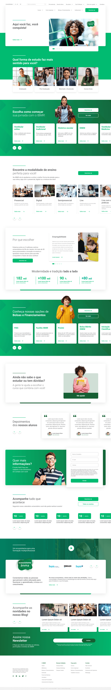
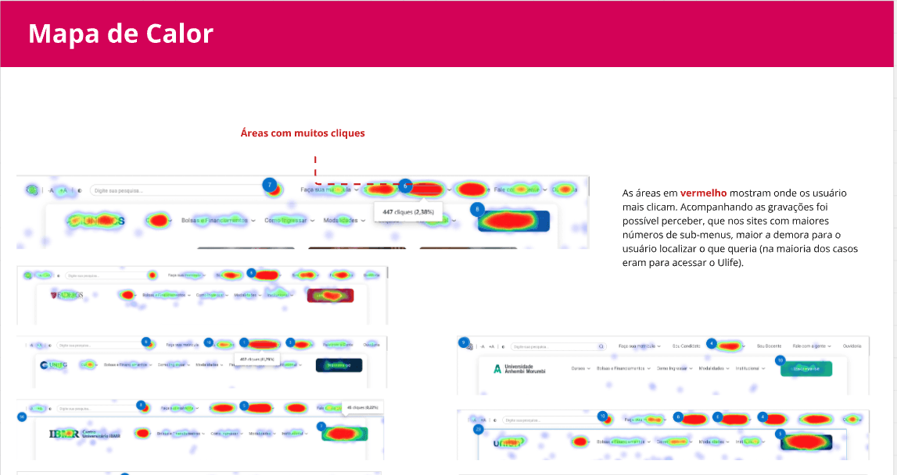
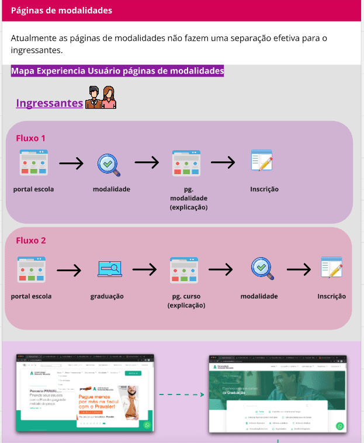

Education · Design system · Grupo Ânima · 18 universities
Unified Redesign
A flexible design foundation for 18 university websites, shaped around student needs.

One group, 18 distinct identities
Grupo Ânima serves more than 300,000 students across 18 universities. Each institution had its own identity, but all relied on a rigid shared template that made information harder to find and the sites harder for internal teams to maintain.
Balance consistency and flexibility
Students struggled to find schedules, billing and support. Mobile performance was weak, and accessibility feedback identified barriers in contrast, readability and screen reader use. The existing PageSpeed score was 9%.
Outcomes & scale
Designing a system for 18 institutions
I defined the strategy for multiple brands and led four designers across UX, UI and data. We combined Clarity and Google Analytics with student research, competitive benchmarking, accessibility feedback and 15+ usability sessions to identify shared needs and distinct requirements for each institution.
Selected screens
A flexible system across 18 brands.
Selected visuals from the original project.






A shared system, tailored to each audience
We created a unified information architecture and accessible modular system adaptable to different university brands and student segments. Three layout directions addressed distinct audience needs while keeping navigation clear, designed for mobile and easier for internal teams to manage. Usability testing showed that 84% found core tasks easier and 88% completed navigation flows without help.
Back to homeNext case · Education · Digital platform